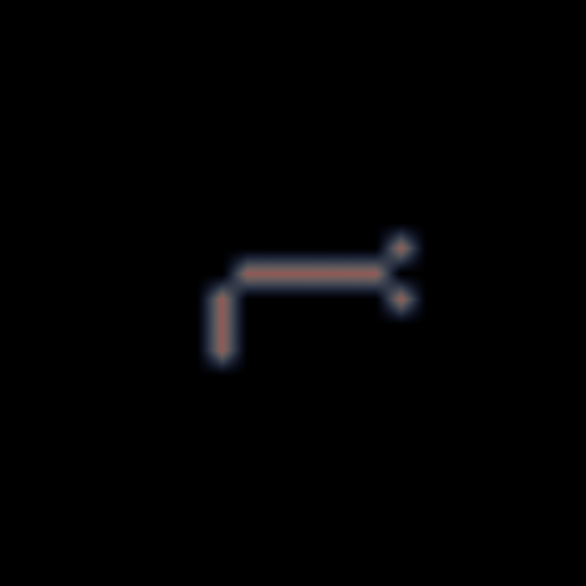

Volume Rendering¶
Output structured VTK file for volume rendering of neural circuit activity with large number of neurons.
Note
this function is experimental
Sample Code¶
import swc2vtk
vtkgen = swc2vtk.VtkGenerator()
vtkgen.add_swc('simple.swc'))
vtkgen.write_volume_vtk('simple.vtk', origin=(-10.0, -10.0, -10.0), ratio=(1, 1, 1), div=(20, 20, 20))
Output Images¶
